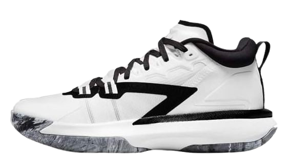
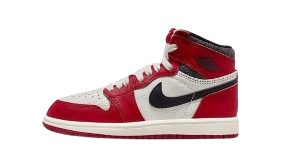
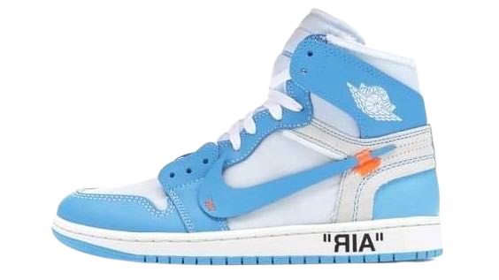
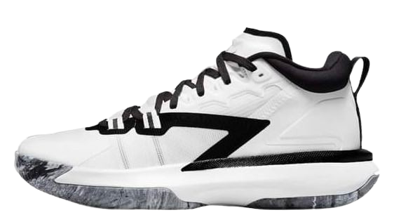
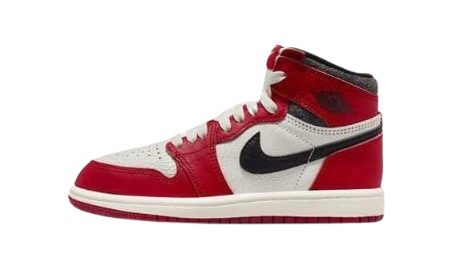
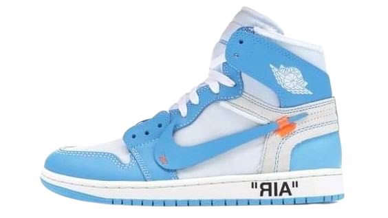

The JT2 is a high-performance running shoe from the Asics brand, designed to provide optimal comfort and support for long-distance runs. The shoe features a breathable mesh upper with reinforced overlays for midfoot lockdown, along with a rearfoot Gel cushioning system that attenuates shock during heel strike. The lightweight, responsive midsole utilizes Asics' proprietary FlyteFoam technology to deliver a springy, energized ride. The durable rubber outsole with multi-directional lugs offers excellent grip and traction on both road and light trail surfaces. Overall, the JT2 is engineered to deliver a smooth, efficient, and comfortable running experience for serious athletes and fitness enthusiasts alike.
The KD17 is the latest basketball shoe model designed by Nike for superstar player Kevin Durant. The shoes feature a lightweight and breathable mesh upper with strategically placed dynamic flywire cables for a secure, lockdown fit. The full-length Air Zoom Turbo midsole provides responsive cushioning and impact protection, while the durable rubber outsole delivers multi-directional traction for on-court performance. Additional features include an integrated lacing system, padded collar for ankle support, and a unique heel counter design inspired by Durant's playing style. Overall, the KD17 combines cutting-edge technology and innovative design elements to deliver a high-performance basketball shoe tailored for the needs of one of the game's elite players.
Zion1 shoes are a cutting-edge athletic footwear line that combines advanced technology, premium materials, and a sleek, modern design to deliver an exceptional performance experience for athletes and active individuals. Featuring a responsive midsole that provides exceptional cushioning and energy return, the Zion1 shoes help to reduce the impact on the joints during intense workouts or high-impact activities, while the breathable upper mesh construction ensures optimal airflow to keep the feet cool and dry. The durable outsole offers superior traction and grip, allowing for stable and confident movements on various surfaces, and the strategic placement of reinforced zones in high-wear areas ensures the shoes maintain their structural integrity and longevity. Additionally, the versatile design of the Zion1 shoes allows them to seamlessly transition from the gym to the street, making them a stylish and comfortable choice for both athletic and casual wear, all while showcasing the brand's commitment to innovation and attention to detail in every aspect of the shoe's construction.
The MJ 1 Chicago Mid Cut shoes are a legendary and iconic basketball sneaker that have stood the test of time, delivering exceptional performance and timeless style. Featuring a mid-cut silhouette for enhanced ankle support and stability, these shoes are crafted with premium materials, including a durable leather upper and a responsive cushioned midsole that provides exceptional impact absorption and energy return, allowing players to move with agility and explosiveness on the court. The signature Air-Sole unit in the heel offers superior shock absorption, reducing the strain on the joints during high-impact movements, while the herringbone-pattern outsole provides exceptional traction and grip, ensuring secure footing and confident maneuverability. The classic red and white colorway, inspired by the Chicago Bulls' iconic uniform, adds a touch of nostalgia and style that transcends the sport, making the MJ 1 Chicago Mid Cut shoes a must-have for basketball enthusiasts and sneaker collectors alike, with a legacy that continues to inspire and captivate the hearts of athletes and fans worldwide.
The Air Jordan 1 Off-White Mid Cut shoes are a groundbreaking collaboration that blends the iconic silhouette of the Air Jordan 1 with the innovative design elements of Virgil Abloh's Off-White brand. Featuring a mid-cut profile for enhanced ankle support and stability, these shoes are crafted with a mix of premium materials, including a distressed leather upper that adds a unique, deconstructed aesthetic. The iconic Air Jordan Wings logo is prominently displayed, while Abloh's signature zip-tie accent and "SHOELACES" text detailing add a touch of streetwear-inspired flair. The cushioned midsole provides responsive and comfortable underfoot support, while the contrasting rubber outsole offers exceptional traction and grip for both on-court performance and off-court style. The bold, colorful design elements, including the vibrant "University Red" and "University Blue" accents, create a striking visual impact that sets the Air Jordan 1 Off-White Mid Cut shoes apart as a true collector's item and a testament to the fusion of high-fashion and athletic innovation.
 




